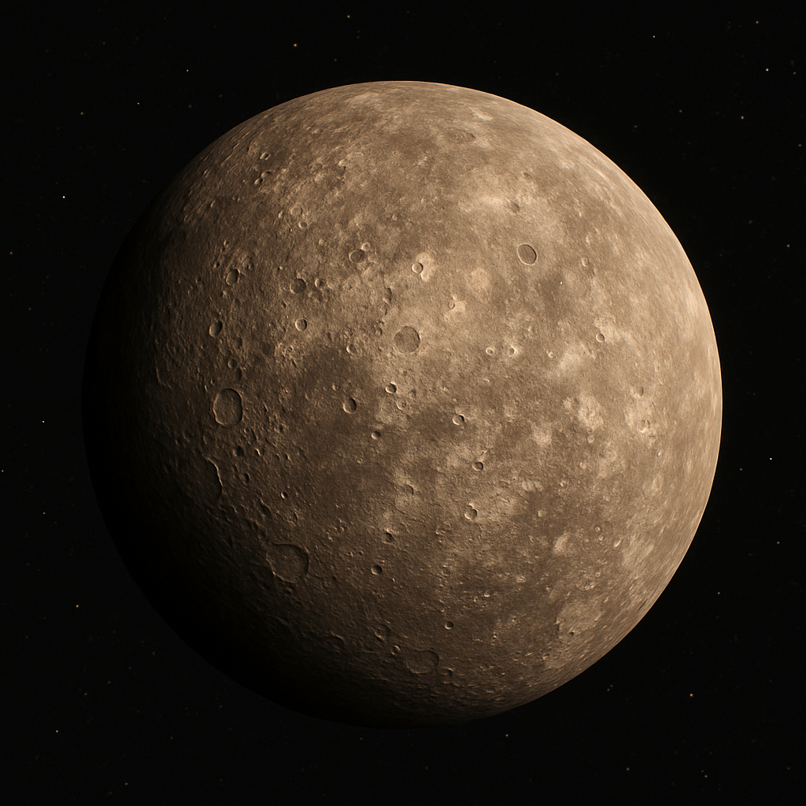
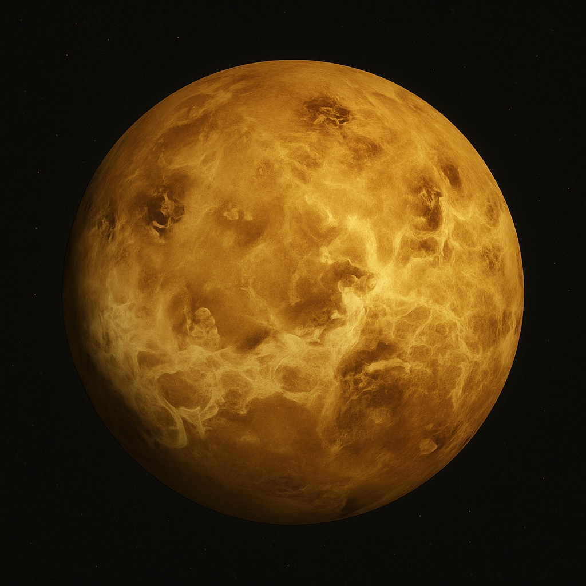
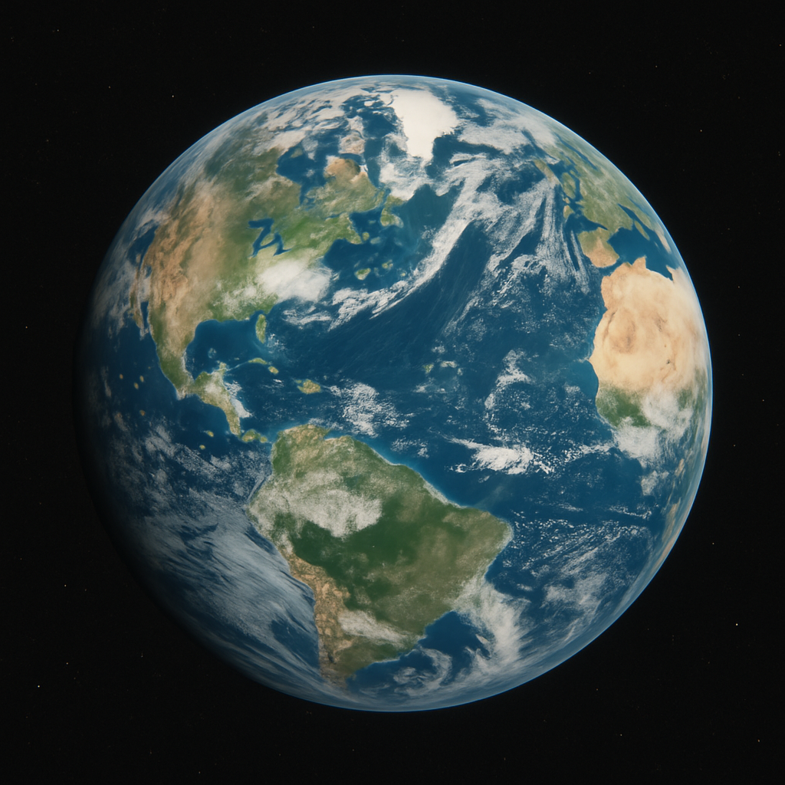
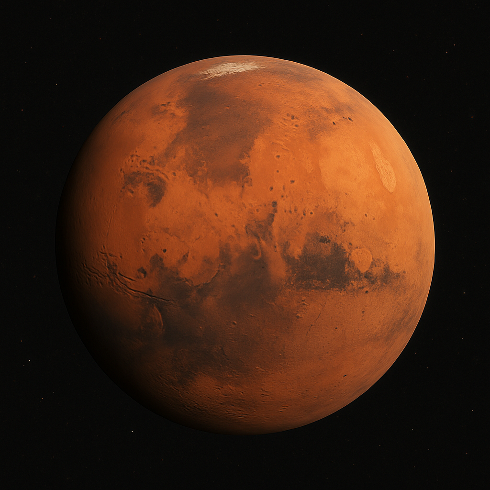
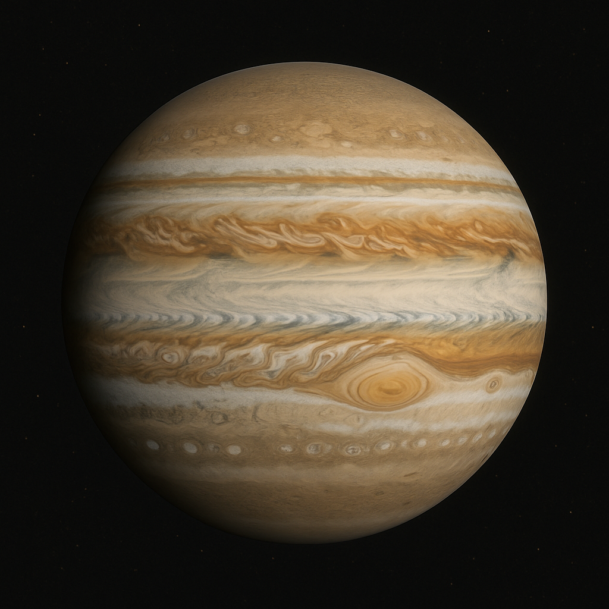
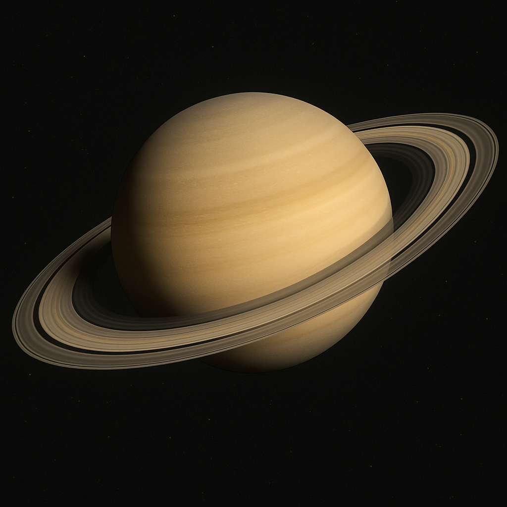
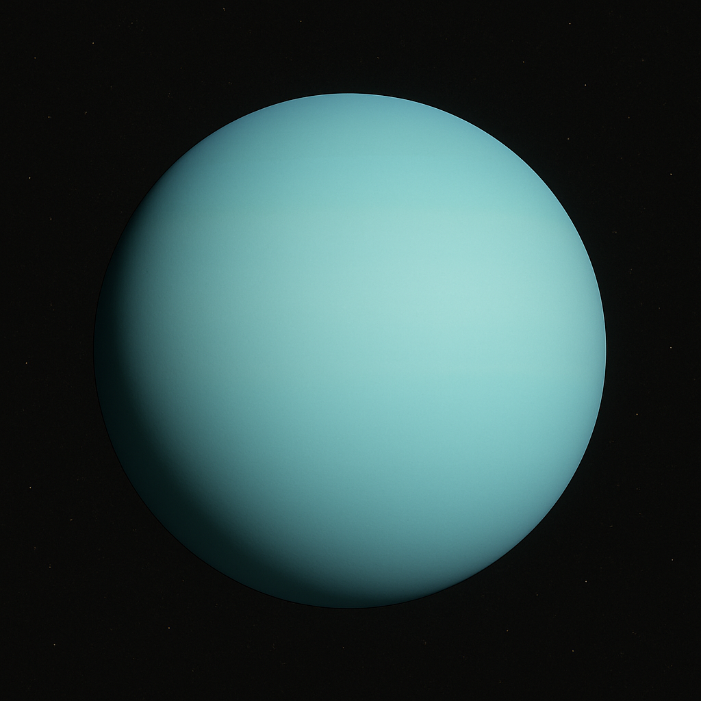
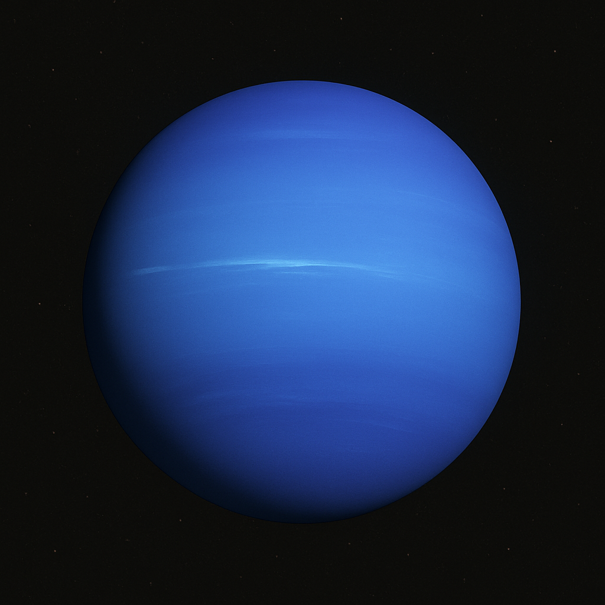

-
 01-수성(Mercury)
Mercury is the smallest planet in our solar system and closest to the Sun. It has a very thin atmosphere, leading to extreme temperature variations.
read more -
 02-금성(Venus)
Venus is the second planet from the Sun and has a thick, toxic atmosphere. It's known for its scorching surface temperatures and volcanic activity.
read more -
 03-지구(Earth)
Earth is the third planet from the Sun and the only known planet to support life. It has a diverse climate and abundant water.
read more -
 04-화성(Mars)
Mars is the fourth planet from the Sun, often called the Red Planet due to its reddish appearance. It has the largest volcano and canyon in the solar system.
read more -
 05-목성(Jupiter)
Jupiter is the largest planet in our solar system, a gas giant with a strong magnetic field and dozens of moons. It is known for its Great Red Spot.
read more -
 06-토성(Saturn)
Saturn is the sixth planet from the Sun, famous for its stunning ring system. It is a gas giant like Jupiter, with numerous moons.
read more -
 07-천왕성(Uranus)
Uranus is the seventh planet from the Sun. It has a unique blue-green color due to methane in its atmosphere and rotates on its side.
read more -
 08-해왕성(Neptune)
Neptune is the eighth planet from the Sun and is known for its deep blue color and strong winds. It has a faint ring system and several moons.
read more